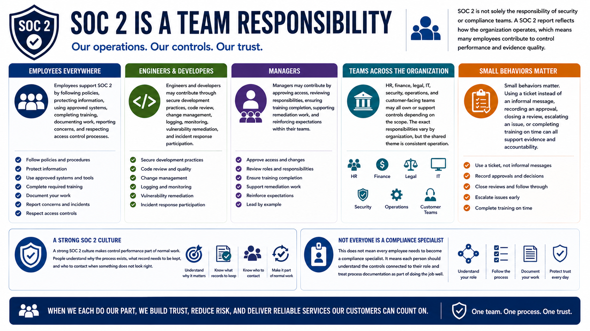

What Is SOC 2?
Employee Responsibilities
Connecting to LMS... Progress: in progress
Version 1.0 | Date: 2026-06-16 | Educational overview of SOC 2 concepts, controls, evidence, and trust.

Narration
SOC 2 is not solely the responsibility of security or compliance teams. A SOC 2 report reflects how the organization operates, which means many employees contribute to control performance and evidence quality.
Employees support SOC 2 by following policies, protecting information, using approved systems, completing training, documenting work, reporting concerns, and respecting access control processes.
Engineers and developers may contribute through secure development practices, code review, change management, logging, monitoring, vulnerability remediation, and incident response participation.
Managers may contribute by approving access, reviewing responsibilities, ensuring training completion, supporting remediation work, and reinforcing expectations within their teams.
HR, finance, legal, IT, security, operations, and customer-facing teams may all own or support controls depending on the scope. The exact responsibilities vary by organization, but the shared theme is consistent operation.
Small behaviors matter. Using a ticket instead of an informal message, recording an approval, closing a review, escalating an issue, or completing training on time can all support evidence and accountability.
A strong SOC 2 culture makes control performance part of normal work. People understand why the process exists, what record needs to be kept, and who to contact when something does not look right.
This does not mean every employee needs to become a compliance specialist. It means each person should understand the controls connected to their role and treat process documentation as part of doing the job well.